DeviceConnectionTypeSupport
M-Auto VCI series devices withHostConnectionSupportmultipleCommunication interface:
| LAN | WLAN | USBLAN | USB | WIFI | ||
|---|---|---|---|---|---|---|
| M-Auto VCI DoIP |  |
|
|
|||
| M-Auto VCI SE | |
|
|
|||
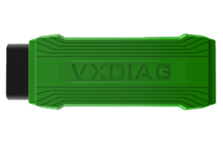 |
M-Auto VCI-PRO | |
||||
| M-Auto VCI Nano | |
|||||
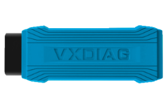 |
M-Auto VCI Nano-WiFi | |
|
DeviceConnectionMethod
LAN - Network cableConnection
LAN ConnectionMode applicable to product：M-Auto VCI DoIP / M-Auto VCI SE
M-Auto VCI DoIP Network cableConnectionDiagram
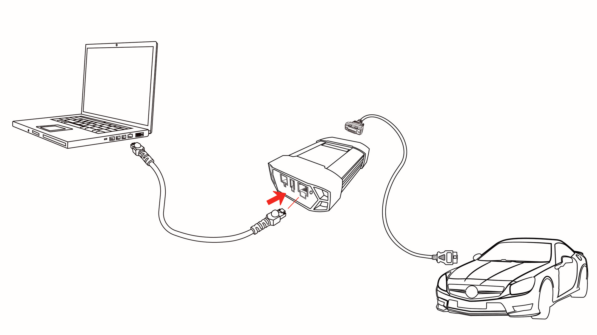
M-Auto VCI SE Network cableConnectionDiagram
via USB Type-C Convertconnect RJ45 NetworkInterface
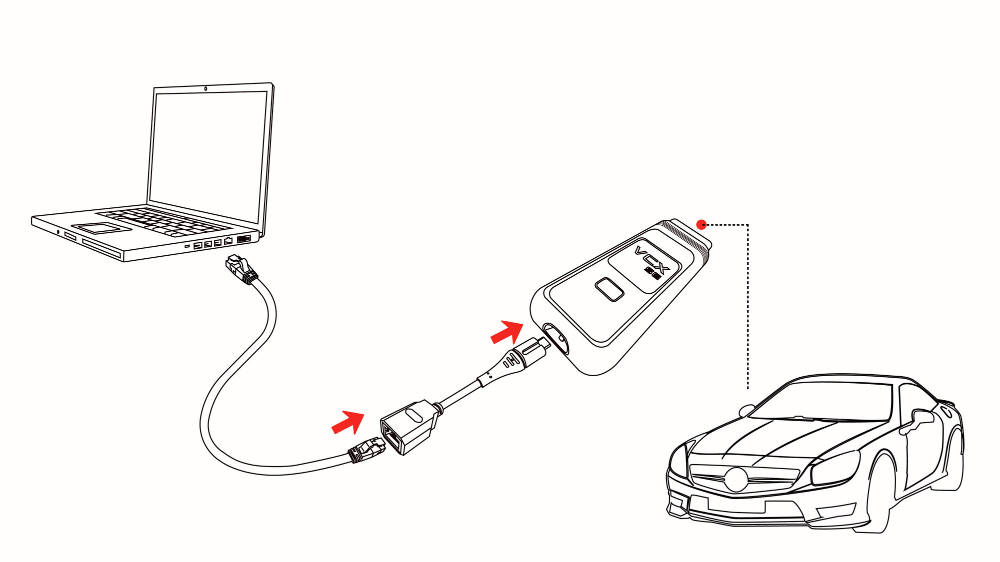
WLAN - WirelessNetwork
WLAN ConnectionMode applicable to product：M-Auto VCI DoIP / M-Auto VCI SE
M-Auto VCI DoIP WLAN ConnectionDiagram
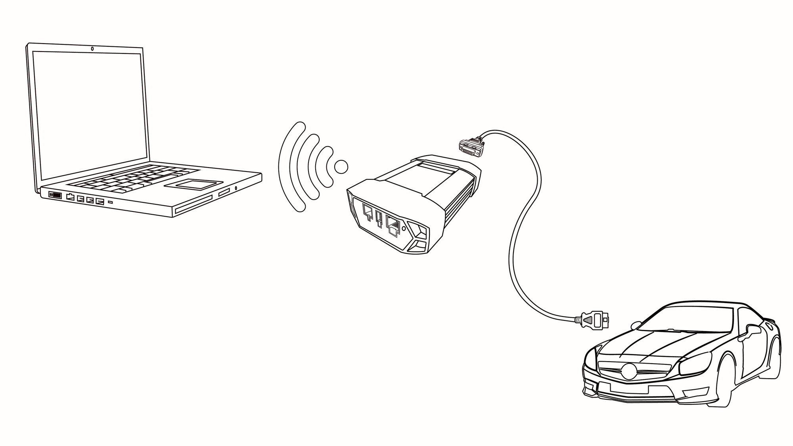
M-Auto VCI SE WLAN ConnectionDiagram
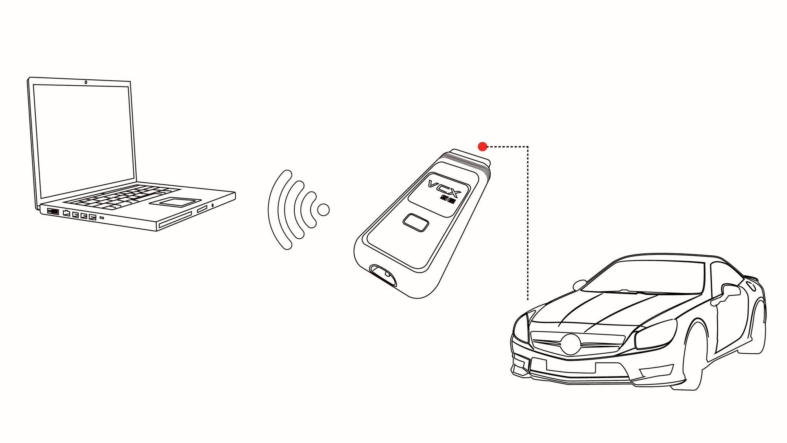
WLAN ConnectionStep
-
DeviceConnectionVehiclePower Supplyandstartnormal。
-
Computer searchWireless:DoIP-VCI-XXXX，selectcenter AutomaticConnection，thenClick Connection。
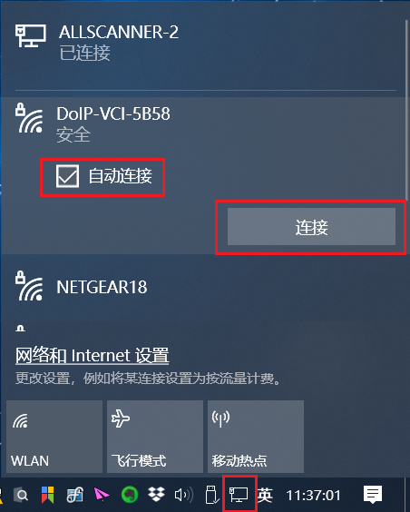
- EnterWirelessNetworkPassword：12345678，Click Next。
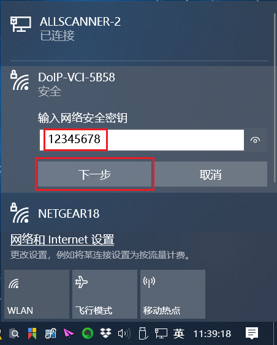
- WirelessNetworkConnectionafter success，in Windows NetworkConnection centercanseetoWirelessNetworkInformationasbelow：
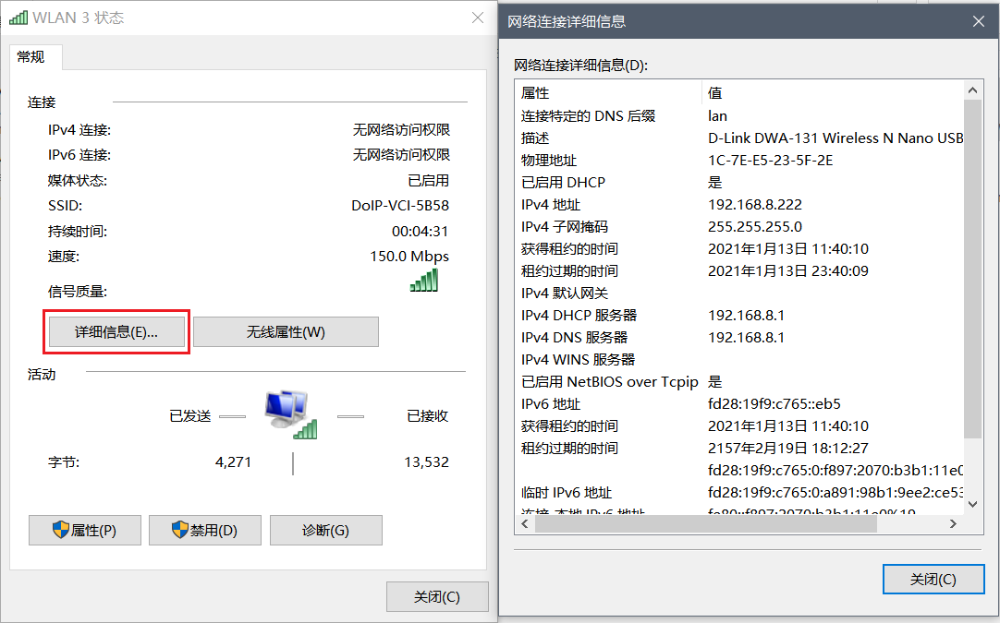
USBLAN - USB network adapter
USBLAN ConnectionMode applicable to product：M-Auto VCI DoIP / M-Auto VCI SE
M-Auto VCI DoIP USBLAN ConnectionDiagram
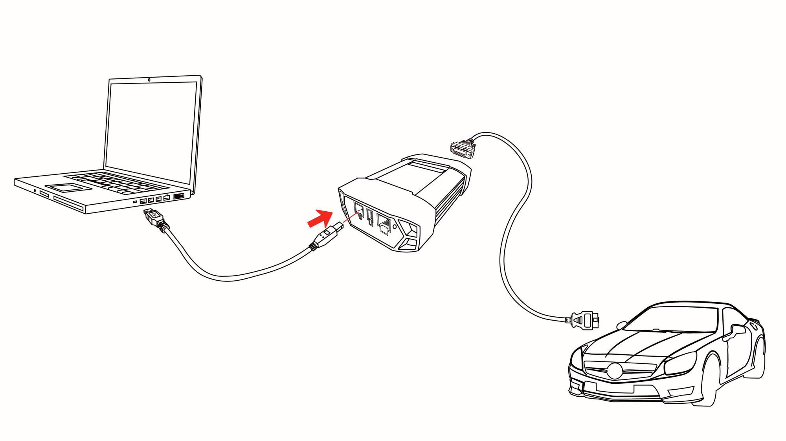
M-Auto VCI SE USBLAN ConnectionDiagram
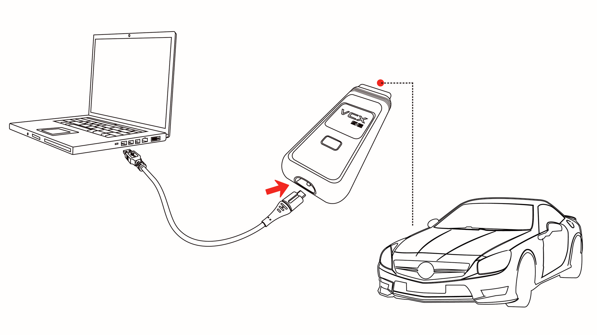
First timeConnection
- [First timeConnection USBLAN when，Windows drivers installed automatically…]


- Driver Installationafter successcaninDevice Managementtool/devicecenterseetoNetworkAdapter：Realtek USB FE Family Controller。
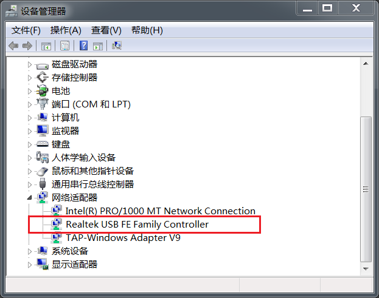
USB (M-Auto VCI Nano)
USB ConnectionModeonlyworks withfor M-Auto VCI Nano Product！
USB M-Auto VCI Nano ConnectionDiagram

First timeConnection
- [First timeConnection USB serial portwhen， Windows drivers installed automatically…]

- Driver Installationafter successcaninDevice Managementtool/devicecenterseetoport：USB Serial Port (COMx)。

WiFi (M-Auto VCI Nano)
thisWirelessConnectionModeonlyworks withforwithWirelessFeatures M-Auto VCI Nano Product！
WiFi M-Auto VCI Nano ConnectionDiagram
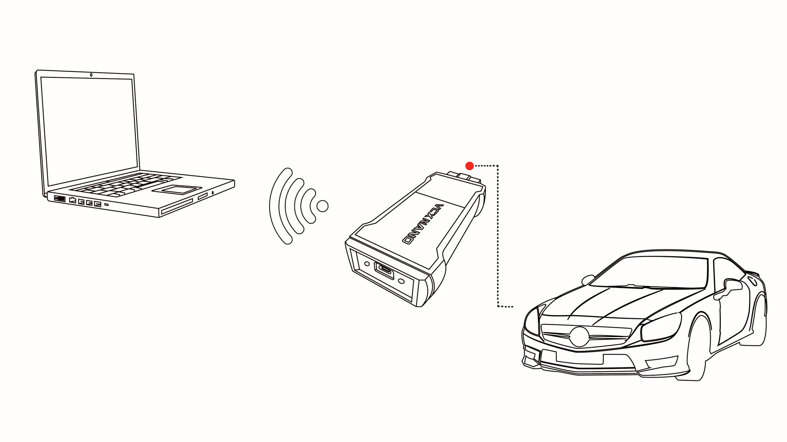
WiFi ConnectionStep
- [DeviceConnectionstartnormal。…]
- Computer searchWireless:M-Auto VCI-WiFi，Click [Connection]。
- [noneedEnterPassword，Connectionsuccessful。…]
DeviceConnectiondetect
DevicefollowaboveMethodcorrectConnectionafter，Launch VCI Manager. Theascancorrectdisplay M-Auto VCI DeviceSerial number、Version、nameetc.Information，thenNoteDevicealreadycorrectConnectionabovecomputer
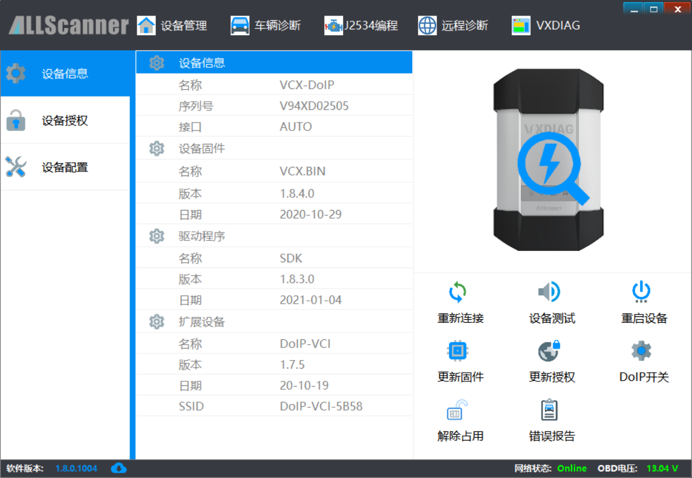
Device Connection Setup
VCI Manager defaultConnectionTypeconfigurefor: AUTOAutomatic， canSupportAutomaticrecognizeallConnectionMode，usuallynoneedModification。
IfyouConfirmneedneedModificationConnectionType，canin Device Management -> Device Configuration interfacecenterModification。
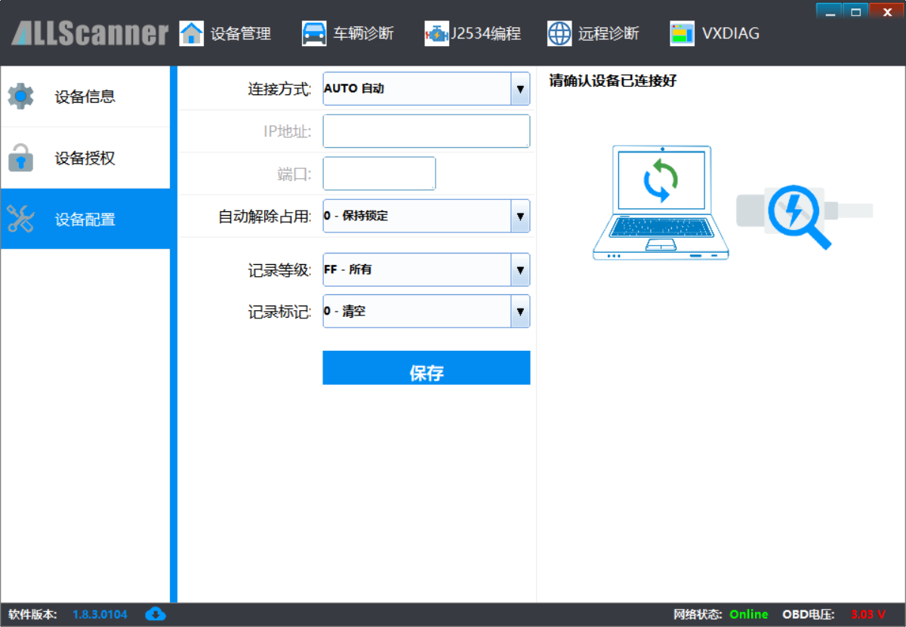
 Change Device IP Address
Change Device IP Address